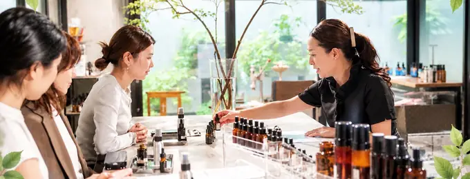

自分だけのオリジナルコスメだから他では手に入らない
一人ひとりに合わせたパーソナルコスメだから、他にはない価値を提供できます。

学ぶだけで終わらない。
エステ・フェイシャルなどの施術。化粧品や美容商品の販売。
美容業界にはすでに多くのサロンやブランドがあり、価格・技術・商品・集客で競争の激しい市場になっています。


だったら、同じ場所で競争するのではなく、新しい美容の仕事をつくればいい。


お客様一人ひとりの肌や悩みに合わせて植物美容を考え、
お客様自身が「自分のためのコスメ」をカスタムする。
そのための植物美容の知識や選び方を、AIも活用しながらサポートする。
それが、
A.I.植物美容デザイナーという新しい美容の仕事です。
一人ひとりに合わせたパーソナルコスメだから、他にはない価値を提供できます。
自分だけのオリジナルコスメだから、他では手に入らないので、リピートやサブスクにつながる。

季節や肌の変化に合わせて、継続的なカウンセリングやコスメの提案ができます。
AI植物美容クラブなどの継続サポートにより、長く続くビジネスモデルを構築できます。


植物美容 × コスメ調合 × A.I.
植物の力とA.I.ナビを活用し、一人ひとりのライフスタイルに合わせたコスメを調合し、仕事につなげるための講座です。
植物美容の基礎から
コスメ調合の技術まで
しっかり学べる。

充実の教材と
実技動画カリキュラムで
すぐに実践できる。

A.I.植物美容ナビと
販促ツールで
活動スタートをサポート。

2003年の創業以来、植物・アロマ・化粧品づくりに携わってきたK-LABO。長年の経験をもとに、実践的に活動できる講座として A.I.植物美容デザイナー講座を開発しました。


New Lifestyle
説明動画は準備ができ次第ご案内します